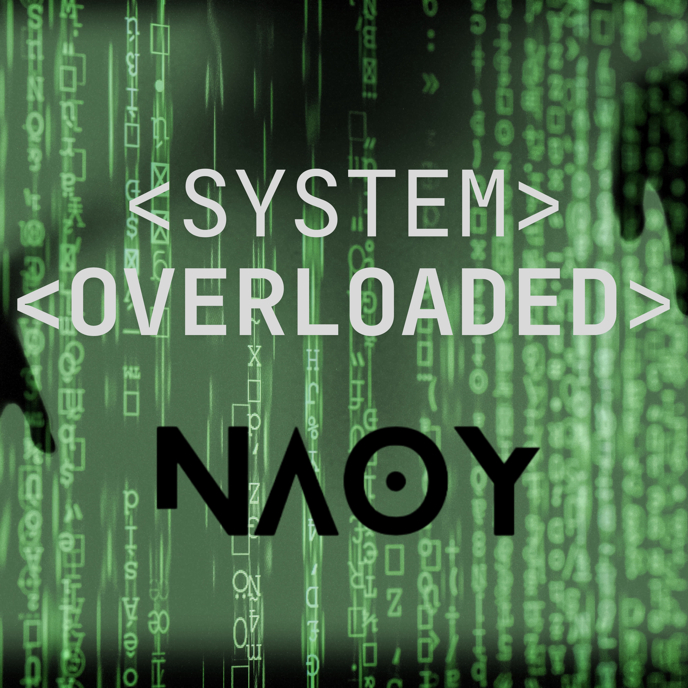
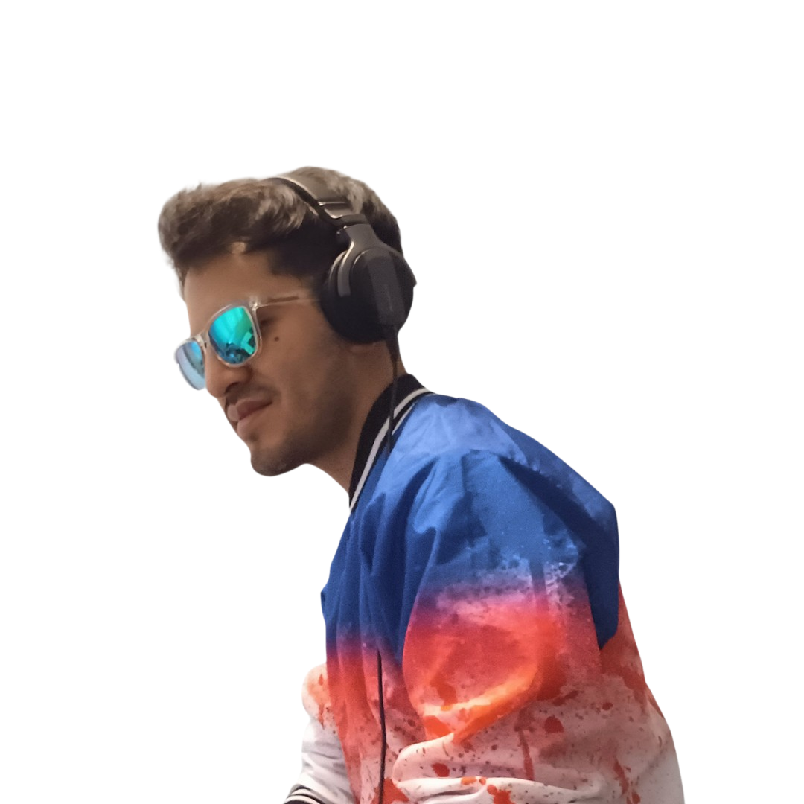

System Overloaded
2024
HIGHLIGHT DE LA CANCIÓN
ListenDJ / PRODUCER
Techno / Hard Techno / Hyper Techno / Tech House / Bass House / Funky House


01
Argenis Omaña, NAOY, es un DJ y productor musical mexicano cuya propuesta se mueve entre los ritmos hipnóticos, intensos y contundentes del Techno y los sonidos alegres y de alta energía del House.
Su acercamiento a la música electrónica comenzó en 2012, cuando nació su inquietud por convertirse en DJ ya que se dio cuenta de los diferentes géneros que existían y quedó fascinado. Fue hasta 2020, cuando decidió seguir su sueño y comenzó a aprender por su cuenta, desarrollando sus primeras habilidades y descubriendo poco a poco su propia identidad musical.
Unos meses después descubrió que podía transformar sus propias ideas en canciones y despertó un nuevo interés por la producción musical. Empezó a publicar sus primeras mezclas y producciones amateurs a YouTube y comenzó a recibir una respuesta positiva que le abrió las puertas a su primera presentación en un festival en Querétaro. Ese momento marcó un punto de inflexión: lo que comenzó como una inquietud personal se convirtió en el inicio de un proyecto profesional.
A partir de entonces, NAOY continuó desarrollando su técnica, perfeccionando sus producciones y llevando su música a plataformas digitales y obtener certificado Pioneer. Esto le ha permitido presentarse en clubes y festivales por todo México, además de colaborar con diferentes marcas y presentarse en la fiesta de MixMag Latam, y firmar sus primeras producciones con sellos discográficos mexicanos.
02
Una selección de producciones y lanzamientos de NAOY.
03
Una selección de presentaciones, proyectos, colaboraciones y experiencias que forman parte de la trayectoria de NAOY.
AÑO
Descripción de la presentación.
AÑO
Descripción de la presentación.
AÑO
Descripción de la experiencia.
Marcas, proyectos y organizaciones con las que NAOY ha trabajado.


04
Para bookings, colaboraciones, eventos y propuestas profesionales, puedes contactar directamente a NAOY.
05
Una selección de momentos en vivo, sesiones, backstage y contenido visual de NAOY.